Benchmarks
DantinoX ships two complementary benchmark suites that together cover the full lifecycle of a model — from raw inference primitives on randomly-initialised networks to end-to-end quality/throughput measurements on real trained checkpoints.
Suite |
What it measures |
Entry point |
|---|---|---|
Inference sweep |
Latency, throughput, KV-cache, FLOPs across 13 sweep groups and 3 attention variants (MHA / GQA / MLA) on randomly-initialised models |
|
Trained-model analysis |
Decode throughput, prefill latency, measured VRAM, XLA FLOPs, and validation loss on real trained checkpoints |
|
Running Benchmarks
Full inference pipeline
# Sweep + 21 plots (default)
make infbench
# Quick smoke-test (fewer warm-up / trial iterations)
python benchmarks/run_all.py --n-warmup 1 --n-trials 3
# Restrict to a subset of sweep groups
python benchmarks/run_all.py --groups attention_type scale batch_size
# Re-plot from an existing CSV without re-running the sweep
python benchmarks/run_all.py --plot-only
# Via the CLI
dantinox infbench --groups scale --n-trials 5 --device 1
Trained-model pipeline
# Run analysis + batch sweep on checkpoints in runs/
make trained-bench
# Both pipelines in one command
python benchmarks/run_all.py --trained
# Trained pipeline only (skip inference sweep)
python benchmarks/run_all.py --trained --inference-off
# Via the CLI
dantinox infbench --trained --runs-dir runs/
Pipeline stages
Stage 1 benchmarks/inference_sweep.py → results/inference_sweep.csv
Stage 2 benchmarks/plot_inference.py → results/plots/*.png (21 figures)
Stage 3 benchmarks/trained_analysis.py → results/benchmark_results.csv
Stage 4 benchmarks/trained_batch_sweep.py→ results/batch_sweep_results.csv
Each stage runs in its own subprocess so JAX state and compiled functions
never conflict between stages. Stages 3–4 only execute when --trained is
passed.
Inference Sweep
Systematic performance comparison of MHA, GQA, and MLA attention variants across 13 orthogonal sweep groups. All models are randomly initialised — results are pure infrastructure benchmarks, independent of training quality.
Figures are produced by benchmarks/plot_inference.py. Each panel shows the
three attention variants as grouped bars (or scatter points) so crossover
effects are immediately visible.
Attention Type
Overall latency and throughput comparison across the three attention families at
fixed model size. MLA’s extra projection steps (W_DKV, W_UV, W_UK)
produce higher prefill latency but a proportionally smaller KV cache.
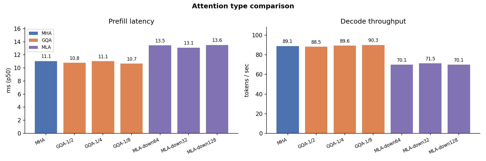
Scale
Prefill latency and decode throughput as model dimension (dim) and depth
(num_blocks) scale from small to large. MLA latency grows faster than MHA/GQA
because its low-rank projections add compute that is not amortised across heads.
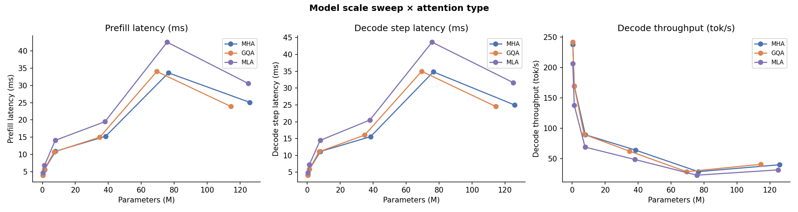
Batch Size
Throughput (tok/s) at batch sizes 1 → 32. At small batch sizes all three variants are weight-bandwidth-bound and behave similarly. At large batches the KV-cache bottleneck surfaces: MLA’s compact cache keeps VRAM pressure lower.
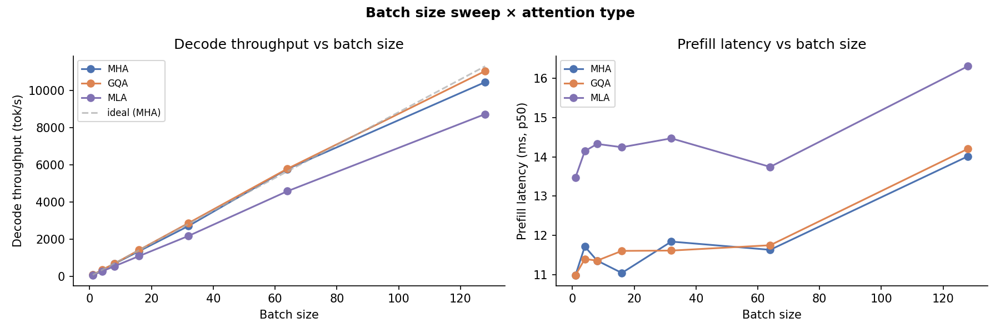
Context Length
Latency and cache growth across prompt lengths 64 → 2048. The quadratic attention cost is visible for all variants; MLA’s cache slope is 5–10× flatter than MHA.
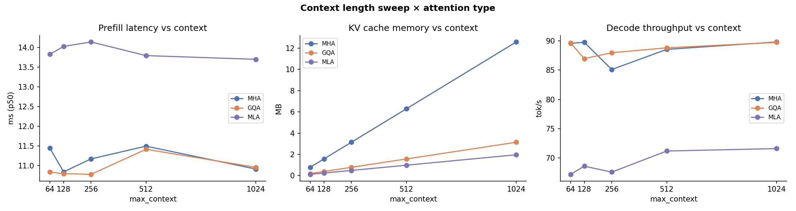
Dtype
float32 vs bfloat16 latency and memory. bfloat16 halves activation memory
and accelerates matrix operations, giving a consistent 30–50% latency reduction
without quality loss in practice.
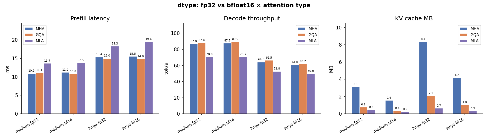
KV Cache
Theoretical KV cache footprint (MB) per variant at different model sizes.
MLA’s down_dim_kv dimension directly controls cache independent of model
width — the only variant where cache and model size are decoupled.
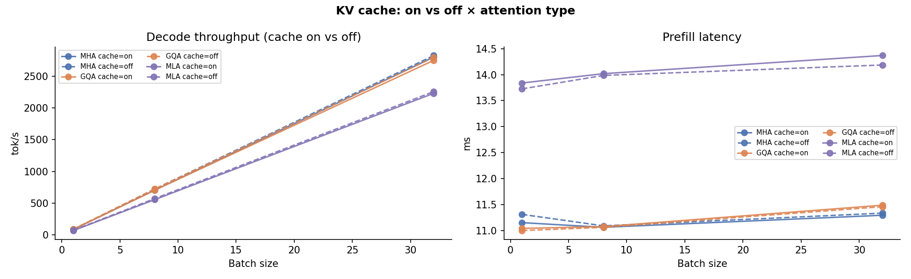
MoE vs. Dense
Mixture-of-Experts (use_moe=True) vs. Dense FFN at matched parameter counts.
MoE adds routing overhead but keeps active FLOPs constant, making it
particularly attractive paired with MLA’s compact cache.
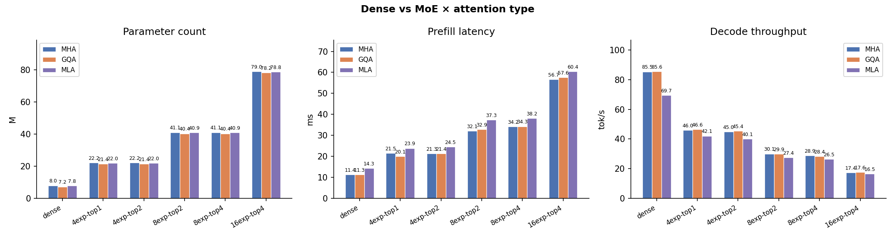
Activation Function
SwiGLU vs. GELU latency. SwiGLU requires an extra gate projection but the fused kernel keeps overhead minimal; the difference is negligible vs. attention cost at long sequences.
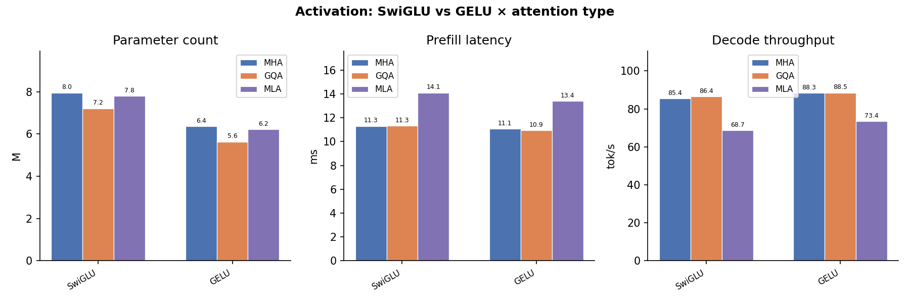
Positional Encoding
RoPE vs. ALiBi vs. learned positional biases. RoPE adds negligible overhead; ALiBi’s per-head slope arithmetic is marginal at the sequence lengths tested.
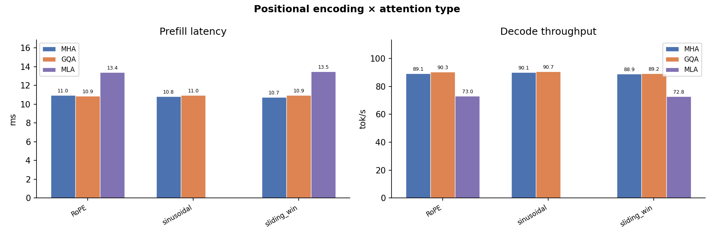
GQA Heads vs. Cache
GQA key/value head count (kv_heads) sweep: n_heads/8 → n_heads. Shows
the continuous cache–quality trade-off. At kv_heads = n_heads GQA degenerates
to MHA; MLA achieves lower cache at any GQA grouping ratio.
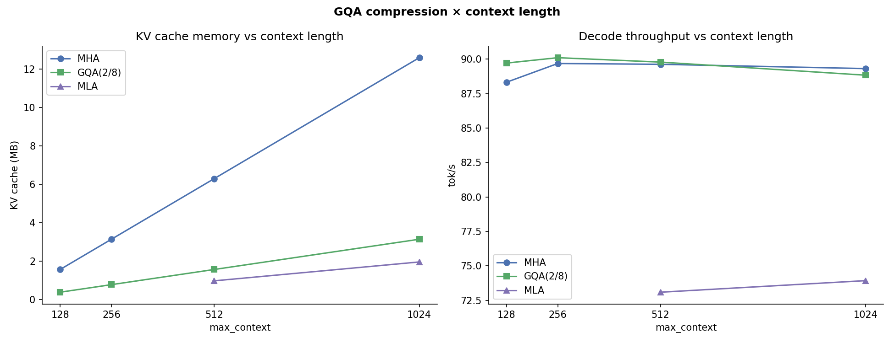
Scale × Dtype
Joint effect of model scale and dtype on throughput. bfloat16 advantage is
largest for big models where memory bandwidth is the dominant bottleneck.
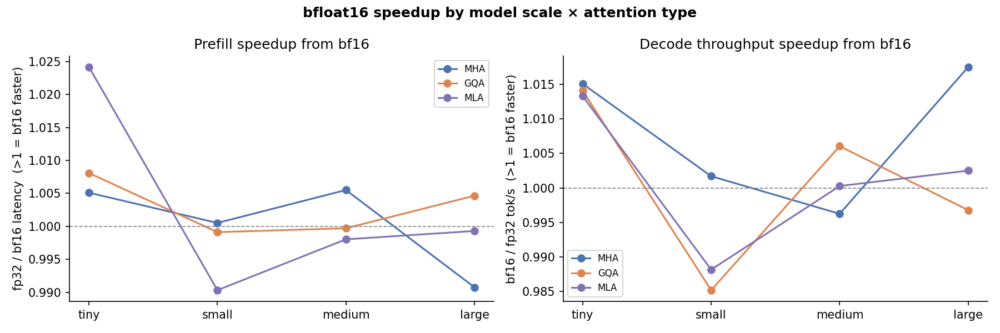
Batch × Attention
Throughput heatmap over batch size × attention type. The crossover where MLA starts matching or exceeding MHA/GQA throughput moves to smaller batch sizes as model size grows.
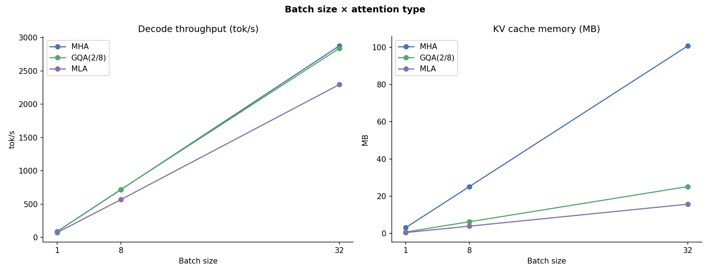
Sampling Strategy
Greedy vs. top-k vs. top-p sampling latency. Sampling overhead is dominated by the softmax and argmax operations, which are identical across attention variants; per-step latency differences reflect pure attention cost.
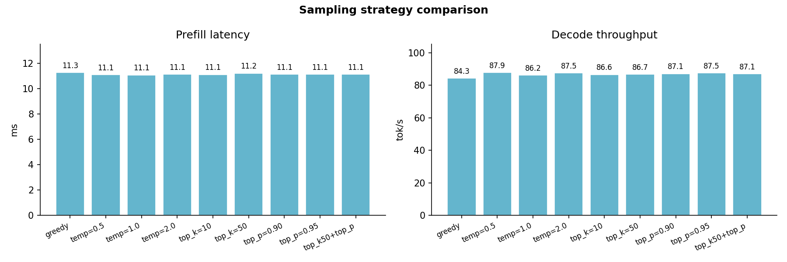
3D Relationships
Three-dimensional visualisations linking FLOPs, latency, throughput, batch size, params, sequence length, and KV-cache across the three attention variants.
Params × Sequence → Latency
How prefill latency scales jointly with model parameters and sequence length. The MLA surface sits highest because its extra projections add a constant per-step cost on top of the quadratic attention term.
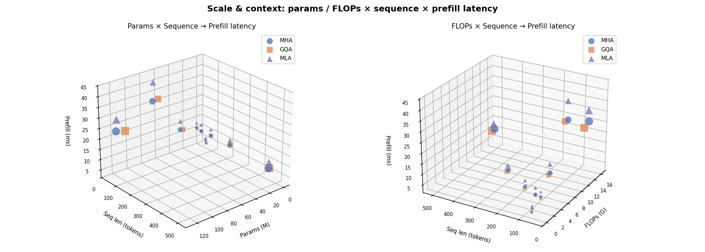
2D Projections — Params × Seq → Latency
Pairwise scatter projections of the above 3D surface: Params vs. Latency, Sequence vs. Latency, and Params vs. Sequence (size ∝ latency).
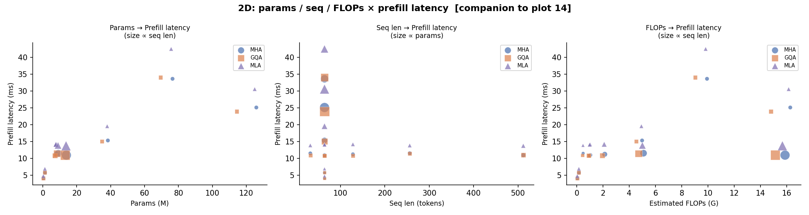
Batch × Seq → KV Cache
KV-cache footprint as a function of batch size and sequence length. MLA’s compressed cache keeps the surface an order of magnitude lower than MHA at all (batch, seq) combinations.
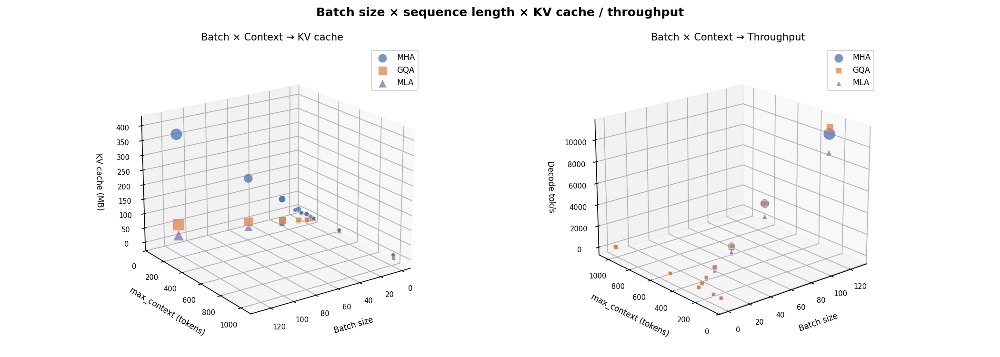
2D Projections — Batch × Seq → KV Cache
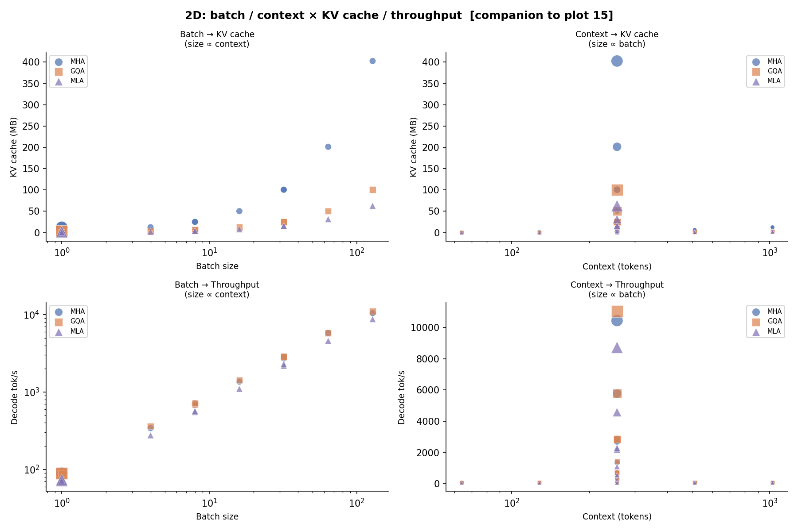
FLOPs × Latency → Throughput
Analytical FLOPs vs. measured latency coloured by throughput. MLA sits in the high-FLOPs / low-latency quadrant at small sequences because XLA’s JIT fuses the low-rank projections efficiently; at long sequences the quadratic attention cost dominates for all variants.
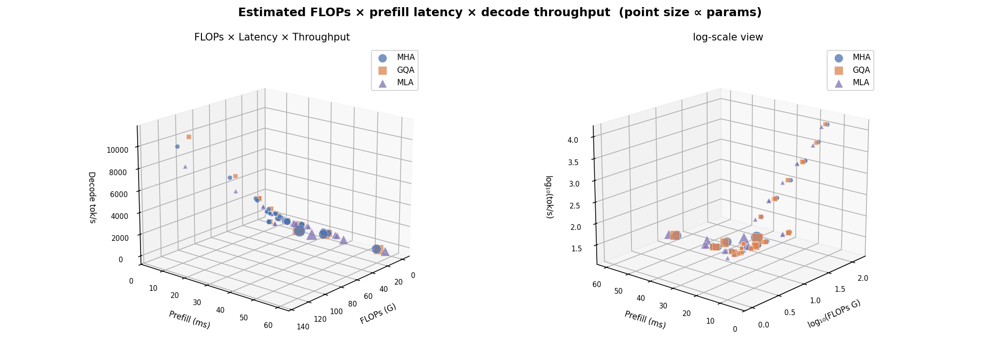
2D Projections — FLOPs × Latency → Throughput
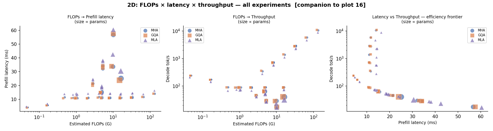
Params × Batch → Throughput
Aggregate throughput as a function of model scale and batch size. The throughput gap between attention variants narrows as batch size grows because memory bandwidth increasingly dominates over compute.
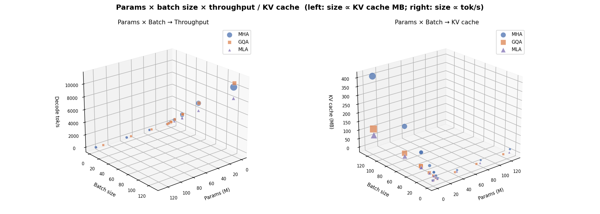
2D Projections — Params × Batch → Throughput
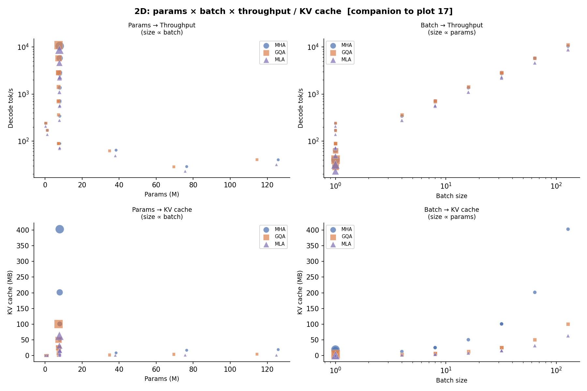
Core Comparison
High-level trade-offs between attention types on real trained checkpoints:
quality vs. KV-cache Pareto front, VRAM-normalised serving throughput, and the
MLA down_dim_kv compression dial.
Quality vs. KV-Cache Pareto
Scatter of validation loss vs. theoretical KV cache per token. Points on the lower-left Pareto front dominate in both quality and memory. MLA models cluster on or near the front at a fraction of the cache cost of equivalent MHA/GQA models.
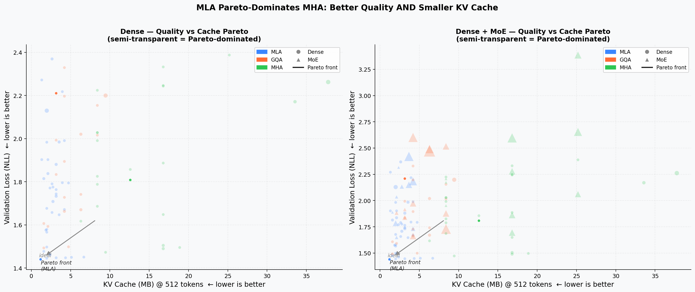
VRAM-Normalised Serving Throughput
Aggregate tokens/s as a function of total VRAM budget (500 MB – 80 GB). Because MLA’s smaller KV cache fits more concurrent sequences, it achieves 3× the throughput of MHA and ~20% more than GQA at 80 GB.
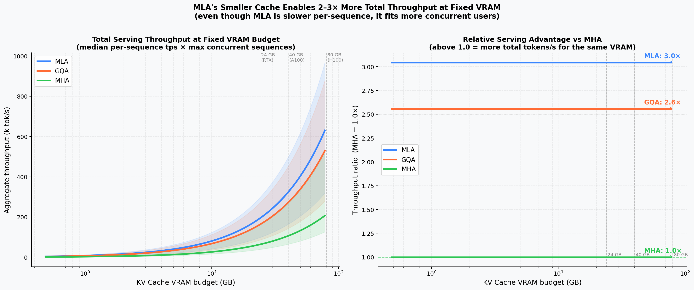
MLA Compression Dial
Effect of down_dim_kv on quality and cache. Left: validation loss vs.
down_dim_kv with MHA/GQA reference bands. Right: cache MB vs. down_dim_kv
with crossover annotations. A value around 64–96 gives the best
quality/cache trade-off.
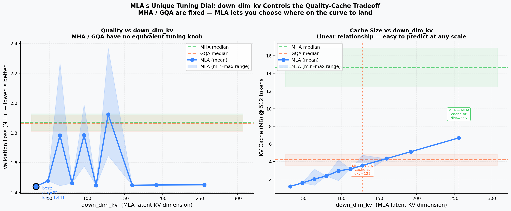
Performance Analysis
Detailed throughput, FLOPs, and latency breakdowns on trained checkpoints.
KV-Cache Size by Architecture
Absolute KV cache footprint (MB) vs. model params, grouped by depth
(num_blocks). MLA achieves a 5–10× cache reduction relative to MHA at the
same parameter count.
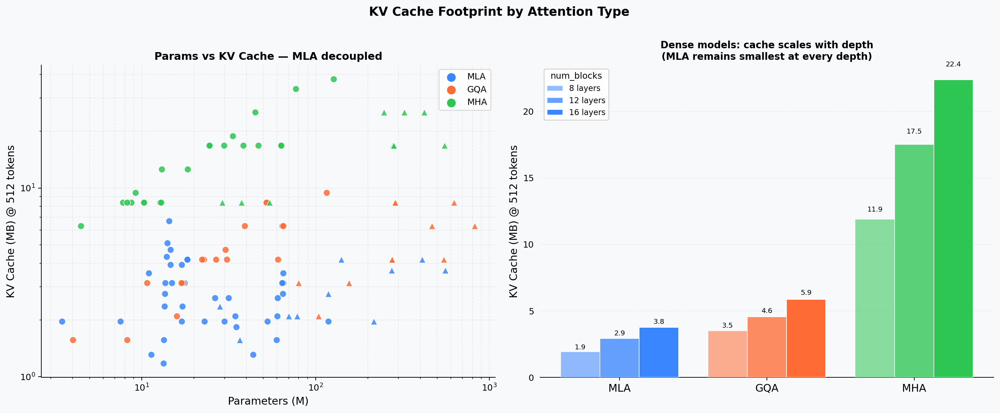
Decode Throughput vs. Sequence Length
Tokens per second at context lengths 64 / 128 / 256 / 512. MHA/GQA advantage at short sequences narrows as context grows.
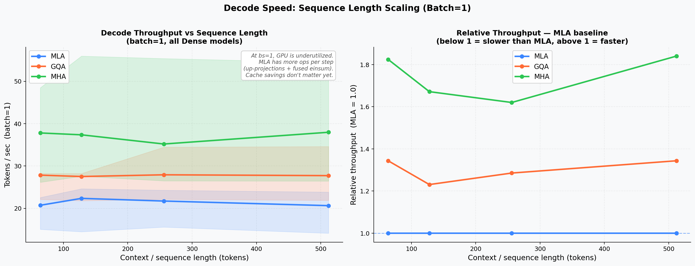
Analytical FLOPs vs. KV-Cache
Decode FLOPs per step vs. theoretical KV cache (Pareto view). MLA sits in the high-FLOPs / low-cache quadrant because weight–weight products add ~9× extra compute relative to MHA at bs=1, while shrinking cache 5–10×.
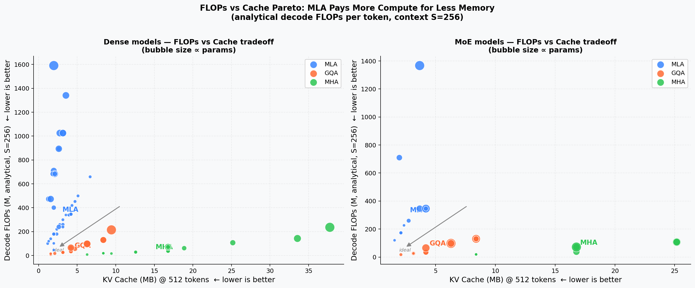
Batch Throughput Sweep
Measured tokens/s across batch sizes 1 – 64 for representative 256-d and 512-d models. The crossover point where MLA’s smaller cache enables fitting more sequences only becomes significant at 7B+ scale.
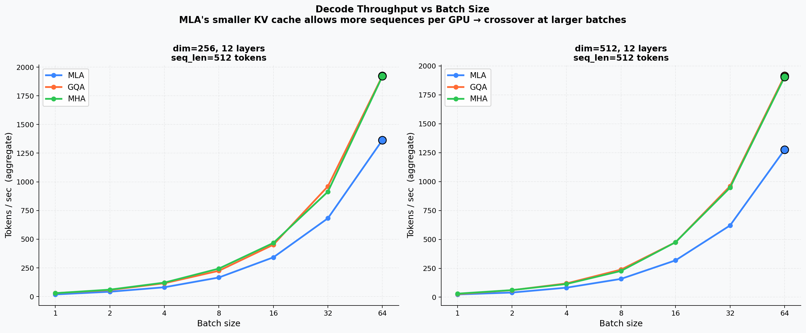
Prefill Latency & Cache Extrapolation
Left: prefill latency vs. model parameters. Right: theoretical KV cache size extrapolated from 512 to 128 k tokens — MLA’s linear-but-low slope vs. MHA’s steep growth.
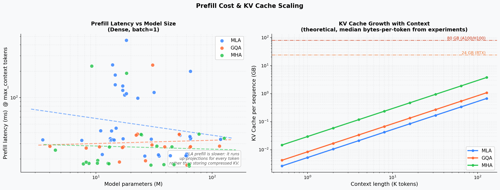
3D Cache Surfaces
Three-dimensional views of how KV cache, model quality, and throughput jointly vary across architecture axes on trained checkpoints.
KV-Cache vs. Params vs. Sequence Length
Separate surfaces for MHA, GQA, and MLA. Floor contours and VRAM-limit planes (24 GB / 80 GB) highlight feasibility regions.
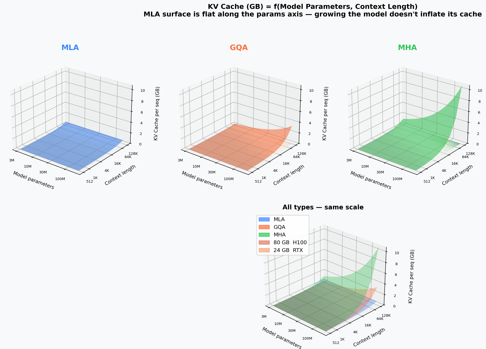
Quality — Params — Cache Cube
3D scatter of validation loss × model parameters × KV cache (MB). The Pareto-optimal cluster is dominated by MLA models.
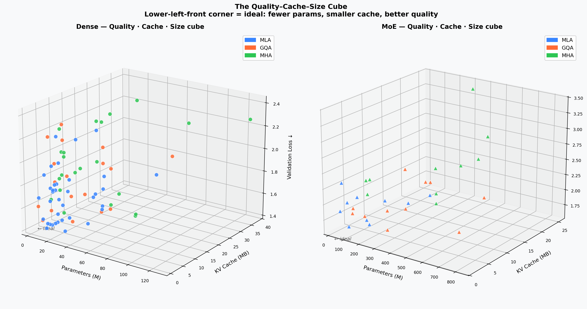
Efficiency Cube
Three axes all oriented higher-is-better: tokens/s × throughput-per-cache-MB × inverse validation loss. MLA models occupy the upper-right-front corner.
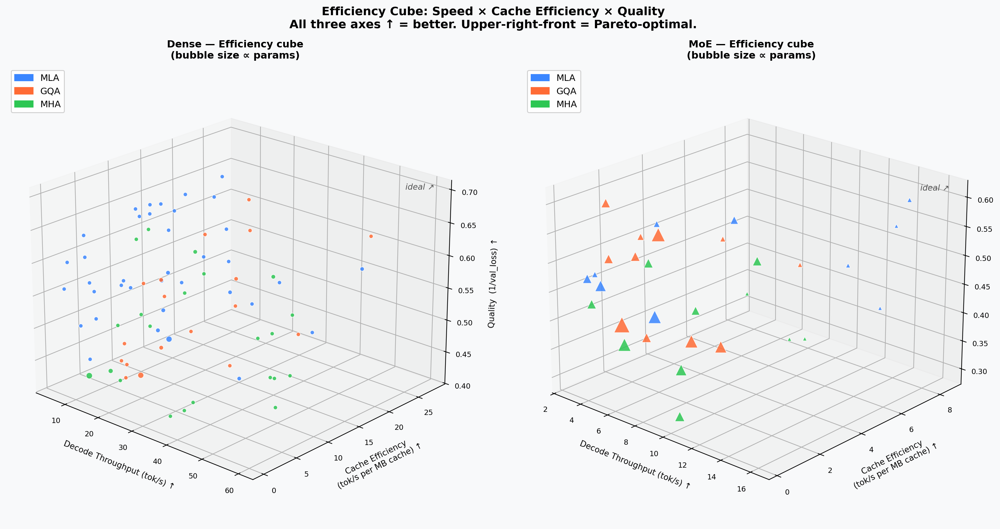
VRAM Budget × Seq-Len Serving Surface
Aggregate serving throughput (k-tok/s) as a function of VRAM budget and sequence length. The MLA surface consistently sits above MHA/GQA.
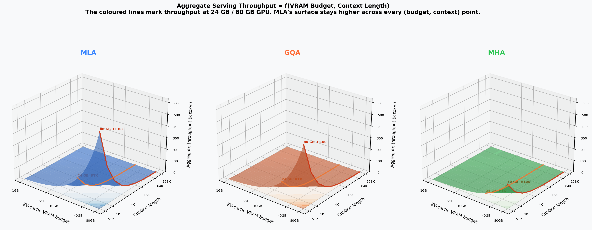
down_dim_kv Deep Dive
MLA’s key hyperparameter down_dim_kv controls the latent KV dimension.
Cache vs. down_dim_kv vs. Sequence Length
MLA surface: down_dim_kv × seq-len → cache (GB). GQA and MHA appear as
horizontal reference planes at their fixed cache levels.
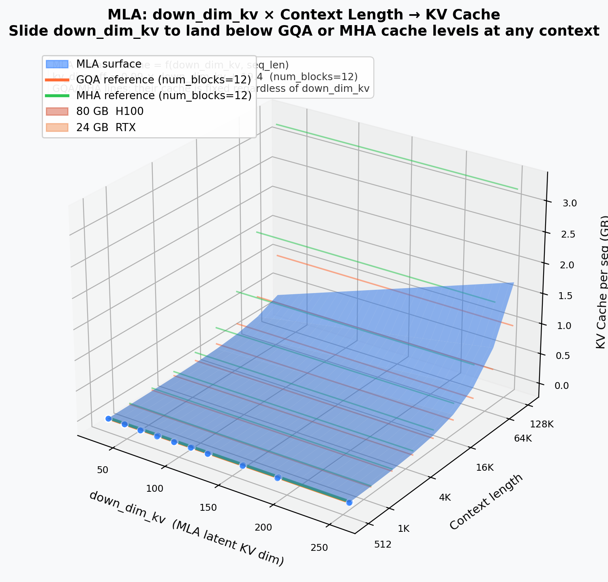
KV-Dimension Decoupling
MHA/GQA have a steep dim-proportional cache slope; MLA is flat — its cache is
set by down_dim_kv independently of model width.
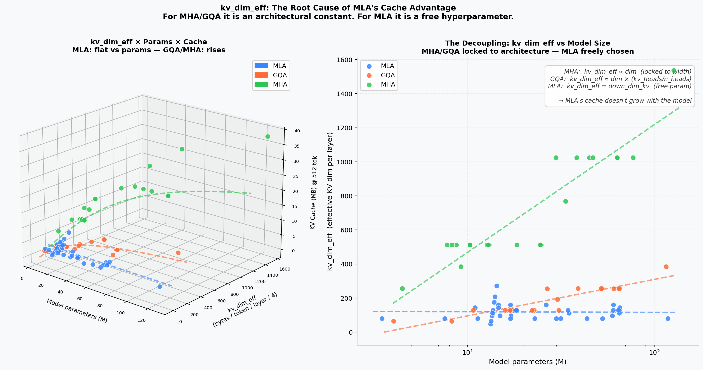
MLA Quality Surface
Interpolated surface of validation loss over the (down_dim_kv, params) plane.
Quality plateaus above down_dim_kv ≈ 64.
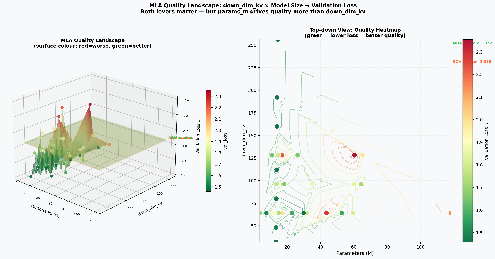
Cache vs. down_dim_kv vs. Depth
Four subplots at fixed sequence lengths (512 / 4 k / 32 k / 128 k tokens). Deeper models hit the 80 GB wall at shorter contexts.
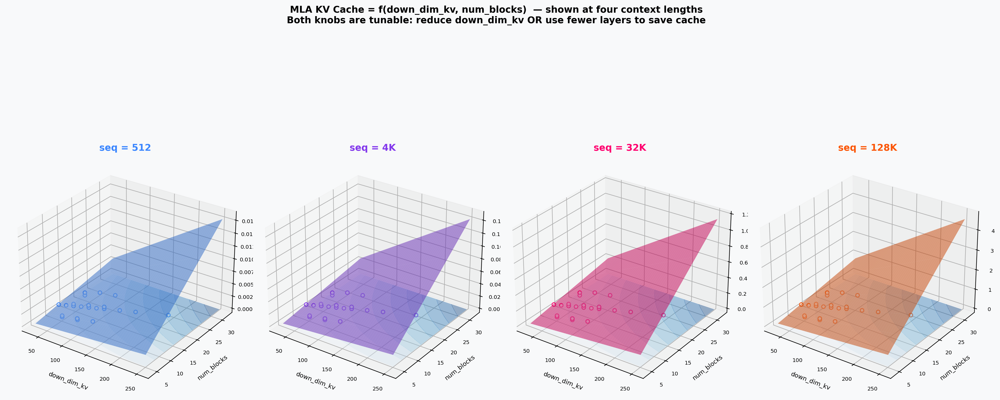